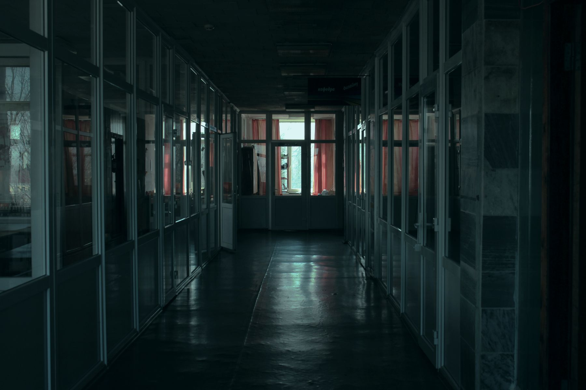

ATLANTIC RADIO INTERCONNECT / КОРПОРАТИВНЫЙ ПОРТАЛ
GOLDEN
RATIO
Добро пожаловать в удалённый офисно-складской филиал Atlantic Radio Interconnect. Здесь налаживают связь. Здесь ни о чём не спрашивают.

СТАНДАРТНЫЙ ПРОТОКОЛ ПОСЕТИТЕЛЯ
ВЫ ЗДЕСЬ,
ЧТОБЫ
НАЙТИ
ВЫХОД.
Golden Ratio — одиночная игра от первого лица. Шелли приходит в себя в административном холле закрытого комплекса. Единственное, что у неё есть, — голос по интеркому и ощущение, что этот офис ей уже знаком.
ПЕРЕД НАЧАЛОМ РАБОЧЕГО ДНЯ:
- 01ОСМОТРИТЕ пространство: обычные на вид кабинеты хранят больше, чем план этажа.
- 02СОПОСТАВЬТЕ документы, автоответчики, ключи и служебные заметки.
- 03СЛУШАЙТЕ внимательно. Голос в линии не обязан говорить правду.
НА НЕЗНАКОМЫЕ
ЗВОНКИ.
УДАЛЁННЫЙ ОФИСНО-СКЛАДСКОЙ ФИЛИАЛ
ВСЁ РАБОТАЕТ
СОГЛАСНО ПЛАНУ.
ДОСТУП РАЗРЕШЁНARI-17
Альтернативная Америка, середина 1990-х. Далеко от городов Atlantic Radio Interconnect ведёт свою тихую работу под вывеской офисно-складского филиала радиотехнической компании.
Объект построен по строгой золотой пропорции. Под привычными этажами находятся лаборатории и комплексы испытания андроидов — их нет на плане для посетителей.
СТАНДАРТНЫЙ ПРОТОКОЛ ВЫХОДА
НЕ РЕШАЙ
ЗАДАЧУ.
РАСКРОЙ
ЕЁ.
Исследуйте закрытый комплекс, решайте пространственные и системные головоломки, ищите ключи и слушайте чужие записи. Чем глубже Шелли заходит, тем меньше игра похожа на обычный путь к выходу.
«Шелли? Если вы слышите меня — не уходите из освещённых коридоров.»
ФРАГМЕНТЫ ДЕЛА GOLDEN RATIO
ПЕРЕДАЧА
НЕ ОКОНЧЕНА.
Материалы для тех, кто заметил, что у объекта есть ещё один этаж.
THE BUTLER BROTHERS / ПРИСОЕДИНИТЬСЯ